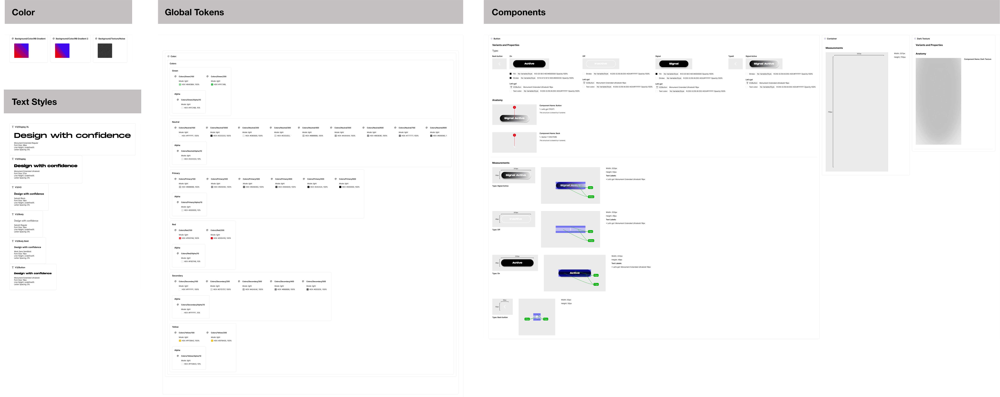

Lobby4Me AI · 2024–25 · Sr. Product Lead · AI · Civic
An AI platform that calls Congress for you.
Lobby4Me streamlines civic outreach with AI-scripted, voice-automated calls to representatives. I led 0→1 development and AI strategy — product vision, user journey, and design system — to make collective action personal, accessible, and scalable.

Mapping civic action into a user journey
I translated the complex process of lobbying into a simple, step-by-step flow — select an issue, generate an AI-crafted script, place a call to your representative — with minimal friction. The UX emphasized emotional ease, accessibility, and momentum-building, integrating generative AI, text-to-speech, and personalization.

A lightweight design system built for scale
I built a modular design system balancing transparency, approachability, and future extensibility. Working closely with engineering, I ensured seamless integration of new features and rapid iteration as user feedback and civic needs evolved — cutting design-to-dev handoff to under eight weeks.

Results
- Full MVP delivered, concept to prototype, in under 8 weeks
- A cohesive brand identity balancing trustworthiness with future-forward innovation
- Voice-based civic action that feels intuitive and emotionally supportive — live, and also exhibited as a participatory artwork
Lobby4Me reimagines civic participation for the AI era — transforming a traditionally intimidating process into an empowering digital experience.